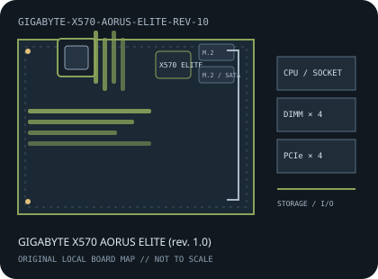

[ INDIVIDUAL COMPONENT // MOTHERBOARDS ]
GIGABYTE X570 AORUS ELITE (rev. 1.0)
AMD Socket AM4 / AMD X570, ATX, 305 × 244 mm, 2019. This record identifies the exact model and revision scope below.

REVISION WARNING: Verify the full model name and PCB revision silkscreen before fitting a CPU, selecting memory, or applying firmware. Similar names and revisions may use different support files.
Specifications
| Catalog subcategory | AMD Socket platforms |
|---|---|
| Board / revision covered | PCB revision 1.0; GIGABYTE hosts separate revision-specific support materials, so check the printed revision before firmware updates. |
| Socket and chipset | AMD Socket AM4 / AMD X570 |
| Form factor | ATX, 305 × 244 mm |
| Memory | Four dual-channel DDR4 DIMM sockets, up to 128 GB; supported speed and ECC behavior depend on CPU, BIOS and memory qualification. |
| CPU and BIOS support | Compatible AM4 Ryzen 2000/3000 and later listed Ryzen 4000G/5000 families for rev. 1.0; exact CPU and minimum BIOS are given in GIGABYTE's CPU list. |
| Expansion | One CPU-connected PCIe x16 slot and one chipset-connected x16-length slot up to x4, plus three PCIe x1 slots. Check the manual for CPU-dependent PCIe generations. |
| Storage | Two M.2 sockets with PCIe 4.0/3.0 paths, plus six SATA 6 Gb/s ports; verify M.2 modes and sharing against the rev. 1.0 manual. |
| Rear I/O and connectivity | Rear USB Type-A across USB 3.2 and USB 2.0, HDMI for supported APU output, Gigabit Ethernet and multi-channel audio; Wi-Fi is not built into this model. |
Compatibility and revision notes
Use only the CPU/BIOS data for revision 1.0. The Wi-Fi variant is a separate model. Chipset and CPU lanes differ; check the manual before populating expansion and storage.
Socket, connector shape and chipset branding alone do not establish compatibility. Check the exact board revision, CPU support table, minimum BIOS, memory population rules, power connectors, case clearance and lane-sharing details in the cited documents.
Preservation and repair
Inspect chipset fan and heatsink, AM4 socket pins, M.2 thermal pads and SATA sockets. Record PCB revision and BIOS before recovery or update.
For archival preservation, record PCB revision, serial/date codes, installed firmware, known faults, repairs and test conditions. Use ESD-safe handling and do not power a board with loose conductive hardware beneath it.
Manufacturer sources
- GIGABYTE X570 AORUS ELITE rev. 1.0 specificationsGIGABYTE's revision-specific specifications.
- GIGABYTE X570 AORUS ELITE rev. 1.0 manuals and downloadsManufacturer manual for board layout, storage and BIOS.
- GIGABYTE X570 AORUS ELITE rev. 1.0 CPU supportConfirm the exact supported CPU and minimum firmware.
Manufacturer specifications, manuals and support lists are authoritative for the physical board; use only revision-matched firmware.